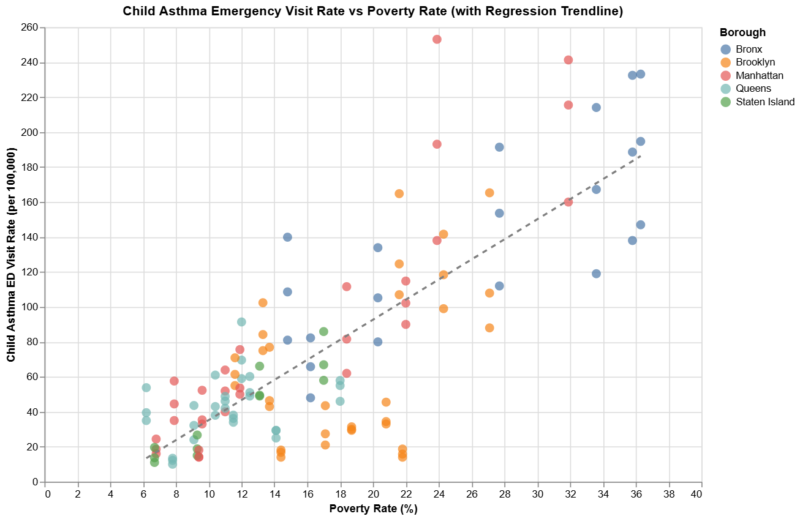

Health impacts of air pollution NYC
1. Child Asthma Emergency Visit Rate vs Poverty Rate

This scatter plot visualises the relationship between child asthma emergency department (ED) visit rates and poverty rates across New York City boroughs. There’s a clear positive correlation—higher poverty rates are often associated with higher asthma ED visit rates. The Bronx stands out with multiple high-poverty, high-visit-rate neighbourhoods, highlighting health inequities.
2. Estimated Annual Asthma Emergency Visits by Age Group and Neighborhood

This stacked bar chart shows the estimated annual asthma ED visits broken down by age group. Children (orange) contribute significantly to total visits in high-burden areas like Bedford Stuyvesant - Crown Heights and High Bridge - Morrisania. The disparity between neighbourhoods is evident, with some areas recording over 1,500 visits annually.
3. Top 20 Neighborhoods by Child Asthma ED Visit Rate (Since 2012)

This heatmap tracks child asthma ED visit rates over time in the 20 most affected NYC neighbourhoods. East Harlem and Central Harlem consistently report the highest rates. While some decline is visible in recent years, the intensity of the issue in certain communities remains prominent.
4. Asthma ED Visit Rate for Children Over Time by Borough

This line chart presents the asthma ED visit rates for children by borough over several time periods. While all boroughs show a downward trend, the Bronx still leads significantly, with rates nearly double those in other areas in earlier years. The gap has narrowed but not disappeared.
5. Neighborhood Poverty Rates by Borough

This dot plot breaks down neighbourhood-level poverty rates across boroughs. The Bronx clearly has the highest concentration of high-poverty neighbourhoods, which helps explain the borough’s elevated asthma ED visit rates shown in earlier charts. Staten Island, by contrast, maintains some of the lowest poverty levels.
Google Colab Notebook
You can view the Google Colab notebook used to create these charts here:
View My Google Colab Notebook
https://colab.research.google.com/drive/1yeAIyWyWZkeGJBynSWsvyyYG9F0YqVxM#scrollTo=5hr0EoK3CQ4l